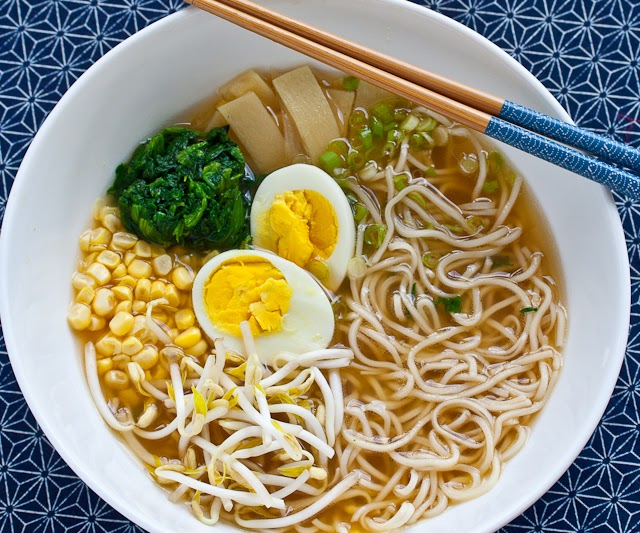

Ramen

Description
Ramen is a Japanese noodle dish. It consists of Chinese-style wheat noodles
served in a broth.
Common flavors include soy sauce, miso, salt, topped with sliced meat and fresh
vegetables.
Ingredients
- Instant Noodle
- Soy sauce
- Sesame Oil
- Green onions
- pork
Steps
- Make instant noodles as instruction
- While cooking the noodle, put soy sauce and sesame oil in a bowl
- Pour the instant noodle into the bowl
- Place green onions and pork on top, and it's ready to eat!